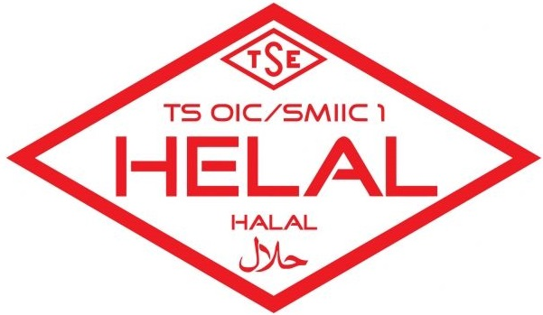

Aslan Teşvik Danışmanlık olarak, işletmelerin İslami usullere uygun üretim ve hizmet sunumu yapmalarını
sağlayan Helal Belgelendirme sürecinde profesyonel danışmanlık hizmetleri sunuyoruz. Helal Belgelendirme,
özellikle gıda sektöründe, İslami kurallara uygun ürünlerin üretildiğini ve bu ürünlerin Müslüman
tüketicilere sunulmaya uygun olduğunu gösteren bir sertifikadır. Helal belgesi, sadece gıda ürünlerinde
değil, kozmetik, ilaç ve temizlik ürünleri gibi diğer sektörlerde de kullanılabilen bir belgelendirme
türüdür.

Helal Belgesi Nedir?
Helal Belgesi, ürünlerin ve hizmetlerin İslami kurallara uygun olduğunu gösteren ve Müslüman tüketicilere
yönelik güvence sağlayan bir belgedir. "Helal" terimi, İslam dininde izin verilen anlamına gelir ve bu,
ürünlerin üretiminden tüketimine kadar olan süreçlerde İslami usullere uygunluğun sağlandığını ifade eder.
Helal belgesi, ürünlerin hammaddesinden, üretim sürecine, paketlemesinden, dağıtımına kadar tüm aşamalarında
İslami kuralların gözetildiğini garanti eder.
Helal belgelendirme, özellikle Müslüman nüfusun yoğun olduğu ülkelerde büyük bir öneme sahiptir. Bu belge,
tüketicilere ürünlerin güvenli ve İslami kurallara uygun olduğunu garanti ederek, onların ürünleri gönül
rahatlığıyla tüketmelerine olanak tanır.
Helal Belgesi Hangi Ürünler İçin Gereklidir?
Helal belgesi, birçok farklı sektörde ve ürün grubunda kullanılabilir. En yaygın olarak helal belgesi
alınabilecek ürün ve hizmet grupları şunlardır:
- Gıda Ürünleri: Et ve et ürünleri, süt ve süt ürünleri, içecekler, şekerleme, unlu mamuller gibi
gıda maddeleri helal belgesine sahip olabilir.
- Kozmetik Ürünleri: Makyaj malzemeleri, cilt bakım ürünleri, şampuanlar ve diğer kozmetik
ürünlerin içerikleri ve üretim süreçleri helal belgesine uygun olabilir.
- İlaçlar ve Gıda Takviyeleri: İlaç ve gıda takviyelerinin içeriğinde kullanılan maddelerin İslami
kurallara uygunluğu açısından helal belgesi alınabilir.
- Temizlik Ürünleri: Sabunlar, deterjanlar ve diğer temizlik ürünlerinin helal olup olmadığını
belgelemek için helal belgesi kullanılabilir.
- Restoran ve Gıda Hizmetleri: Restoranlar ve gıda hizmeti sunan işletmeler, sundukları ürünlerin
helal olduğuna dair belgelendirme alabilir.
Helal Belgelendirme Süreci
Helal belgelendirme süreci, titizlikle takip edilmesi gereken bir dizi adımdan oluşur. Bu süreç, işletmenin
İslami kurallara uygunluk sağladığını belgelemek amacıyla gerçekleştirilir. Genel olarak helal belgelendirme
süreci şu adımlardan oluşur:
- Başvuru ve Bilgilendirme: İşletmenin helal belgesi almak için yetkili belgelendirme kuruluşuna
başvurması ile süreç başlar. Bu aşamada, işletme helal belgelendirme süreci hakkında bilgilendirilir ve
gerekli dokümantasyon sağlanır.
- Denetim ve Değerlendirme: Üretim süreci, hammaddeler, hijyen koşulları ve diğer ilgili faktörler,
İslami kurallara uygunluk açısından denetlenir. Bu denetim, İslam hukukuna uygun şekilde
gerçekleştirilir ve ürünlerin helal standartlarına uygun olup olmadığı değerlendirilir.
- Test ve Analiz: Ürünlerin içeriği ve üretim süreçleri, helal standartlarına uygunluk açısından
test edilir ve analiz edilir. Bu testler, özellikle gıda ürünlerinde, domuz yağı ve alkol gibi haram
maddelerin bulunup bulunmadığını belirlemek için yapılır.
- Belgelendirme: Denetim ve testler sonucunda, ürünler İslami kurallara uygun bulunursa, işletmeye
helal belgesi verilir. Bu belge, ürünlerin helal olduğunu ve Müslüman tüketicilere sunulmaya uygun
olduğunu gösterir.
- Belge Yenileme ve Sürekli Denetim: Helal belgesi, belirli bir süre için geçerlidir ve bu süre
sonunda yenilenmesi gerekir. Yenileme sürecinde yeniden denetim ve testler yapılır. Ayrıca, helal
belgesine sahip olan işletmeler, sürekli olarak izlenir ve denetlenir.
Danışmanlık Hizmetlerimiz
Aslan Teşvik Danışmanlık olarak, helal belgelendirme sürecinde işletmelere kapsamlı danışmanlık hizmetleri
sunuyoruz. Hizmetlerimiz şunları içerir:
- Başvuru Süreci Yönetimi: Helal belgesi başvuru sürecinde gerekli belgelerin hazırlanması ve
ilgili belgelendirme kuruluşu ile olan iletişimin yönetilmesi.
- Denetim Hazırlığı: Üretim süreçlerinizin helal standartlarına uygun hale getirilmesi ve denetim
sürecine hazır olunması için gerekli hazırlıkları yaparız.
- Eğitim ve Bilgilendirme: Çalışanlarınıza helal standartları hakkında eğitimler sunarak,
işletmenizin helal belgelendirme sürecine uygunluğunu sağlarız.
- Sürekli Destek ve Belge Yenileme: Helal belgesinin yenilenmesi sürecinde destek sunar ve
işletmenizin sürekli olarak helal standartlarına uygun kalmasını sağlarız.
Neden Aslan Teşvik Danışmanlık?
Helal belgelendirme süreci, hassas ve titizlik gerektiren bir süreçtir. Aslan Teşvik Danışmanlık olarak, bu
sürecin her aşamasında yanınızda olarak, işletmenizin helal standartlarına uygunluğunu sağlıyor ve Müslüman
tüketicilere güvenilir ürünler sunmanıza yardımcı oluyoruz.
- Uzmanlık: Helal belgelendirme süreçlerinde derin bilgi ve deneyime sahibiz
- Hızlı ve Güvenilir Hizmet: Süreci hızlandırarak, kısa sürede belgelendirme yapılmasını
sağlıyoruz.
- Özelleştirilmiş Çözümler: Her işletme için özel çözümler sunuyoruz.
- Sürekli Destek: Belgelendirme sürecinin her aşamasında yanınızda oluyoruz.
Sonuç
Helal belgesi, işletmenizin İslami kurallara uygunluk sağladığını ve Müslüman tüketicilere güvenli ürünler
sunduğunu gösteren önemli bir belgedir. Aslan Teşvik Danışmanlık olarak, helal belgelendirme sürecinde
ihtiyaç duyduğunuz tüm desteği sağlıyor ve işletmenizin helal standartlarına uygunluğunu güvence altına
alıyoruz. Helal belgelendirme hakkında daha fazla bilgi almak ve hizmetlerimizden yararlanmak için bizimle
iletişime geçebilirsiniz.